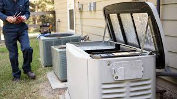

Barton Creek Electrical Services for Luxury Homes
Specialized electrical services for one of Austin's most prestigious communities. Expert panel upgrades, smart home integration, generators, and landscape lighting for luxury estates.
Specialized electrical services for one of Austin's most prestigious communities. Expert panel upgrades, smart home integration, generators, and landscape lighting for luxury estates.
Texas Electric and Light specializes in electrical services for Barton Creek's distinguished luxury estates. We understand the sophisticated electrical demands of high-end homes and deliver solutions that match the exceptional quality of your property.
Our master electricians have extensive experience working in Barton Creek, from the rolling hills of the Country Club estates to the exclusive neighborhoods throughout the area. We provide discreet, professional service that respects your home's elegance while delivering cutting-edge electrical solutions. Whether you're upgrading an existing estate, integrating smart home technology, or adding outdoor living features, our team brings the expertise and attention to detail that Barton Creek homeowners expect.
From panel upgrades to landscape lighting, we provide comprehensive electrical services tailored to luxury estates.
Many beautiful Barton Creek estates were built when electrical demands were significantly lower than today's requirements. Modern luxury living requires robust electrical infrastructure to support home theaters, wine cellars, multiple HVAC zones, EV charging, and advanced technology.


Barton Creek residents expect their homes to offer both luxury and convenience. Modern smart home technology delivers unprecedented control over lighting, climate, security, and entertainment—but it all requires proper electrical infrastructure.
Barton Creek's natural beauty and favorable climate make outdoor living spaces an essential part of luxury homes. Professional electrical design transforms these areas into functional, beautiful extensions of your home.

Luxury homes depend on continuous power for security systems, climate control, refrigeration, wine cellars, and everyday comfort. A whole-house generator ensures your Barton Creek estate maintains full functionality during weather events or grid outages.
Extensive experience with high-end residential electrical systems and custom installations
We work seamlessly with architects, designers, and builders on your project
Professional service that respects your privacy and property care expectations
TECL #28315, fully insured including high-value property coverage
Barton Creek is one of Austin's most prestigious communities, featuring luxury estate homes, rolling hills, and the renowned Barton Creek Country Club. Many homes feature custom architecture, premium finishes, and advanced electrical systems set on large lots with mature landscaping.
We typically respond to Barton Creek service calls within 45-60 minutes for emergencies. For scheduled appointments, we offer flexible timing including early morning or evening service to accommodate your schedule. Our electricians arrive in professional vehicles and are equipped to handle most situations on the first visit.
Absolutely. We regularly collaborate with custom home builders, architects, and interior designers on Barton Creek projects. We understand the importance of coordinating with other trades, maintaining clean work areas, and delivering installation quality that matches the craftsmanship of luxury homes. We're comfortable working from detailed electrical plans and can provide input during the design phase.
Yes. Our electricians are trained and experienced with Lutron systems (HomeWorks, RadioRA2, Caseta) as well as other premium control platforms like Crestron and Control4. We can expand existing systems, troubleshoot issues, or integrate new electrical work with your current automation. We work closely with your technology integrator to ensure seamless coordination.
A 400-amp upgrade typically involves coordinating with Austin Energy for service capacity, installing a new meter base, replacing the main service panel, updating grounding systems, and often adding sub-panels for better load distribution. The project usually takes 2-3 days including utility coordination. We handle all permitting and inspections, and schedule work to minimize disruption to your household.
Yes, we offer annual electrical maintenance programs for Barton Creek estates. This includes comprehensive system inspections, testing of GFCI and AFCI protection, panel thermal imaging, landscape lighting checks, generator testing and maintenance, and priority emergency response. Many of our luxury home clients appreciate having a trusted electrician who knows their property and can respond quickly when needed.
We take special care when working in completed luxury homes. Our electricians use floor protection, keep work areas clean, patch and paint access points when possible, coordinate with your contractor or painter for more extensive finishing, and work efficiently to minimize disruption. We understand that your home is your sanctuary and treat it accordingly.
We offer complete landscape lighting services including design consultation. Our electricians can create a lighting plan that highlights your property's best features, balances aesthetic and security concerns, incorporates energy-efficient LED technology, and uses quality fixtures designed for Texas weather. We can also work from lighting designs provided by landscape architects.
From our location in Dripping Springs, we provide fast, reliable service to all Barton Creek neighborhoods including the Country Club area, Barton Creek Estates, and surrounding luxury communities.
| Service Type | Response Time |
|---|---|
| Emergency Service | 45-60 minutes |
| Same-Day Service | Same business day |
| Scheduled Appointments | 1-2 business days |
Our licensed electricians are ready to help with all your luxury home electrical needs in Barton Creek. From panel upgrades to smart home integration to landscape lighting, we provide quality service that matches the exceptional standards of your estate.
Licensed & Insured | TECL #28315 | Serving Barton Creek Since 2004